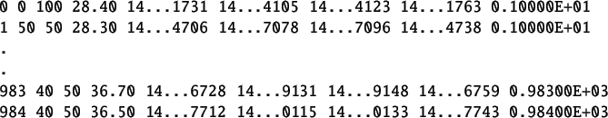

The detailed procedure to perform a virtual experiment is explained in Chapter![[*]](file:/usr/local/share/lib/latex2html/icons/crossref.png) . A summary of the same is provided in section 1.1. It is same for this section with following changes.
. A summary of the same is provided in section 1.1. It is same for this section with following changes.
- Step1: The working directory is prbs/identification. Open this directory.
- Step2: Same
- Step3: Same
- Step4: Switch to the working experiment directory and double-click on the file prbstest.sce. This will launch scilab and also open the file prbstest.sce in the scilab editor. Linux users will have to launch scilab manually. They also have to change the working directory to prbs/identification and then open the prbstest.sce file in the scilab editor.
- Step5: Load the functions available in common files directory by executing the command getd<space>..\..\common_files
- Step6: Execute the file prbstest.sce. Expect the prbs test xcos diagram to open automatically. If this doesnt happen, check the scilab console for error message.
- Step7: Execute the prbstest xcos diagram.
- Step8: Same
The virtual experiment response is shown in figure 7.5. The corresponding data file is shown in table 7.2. The time stamps shown are cut short for better viewing. This data file can be found in prbs/identification folder for virtual experiments. The name of this file is prbs-data-virtual.txt.
Table 7.2:
PRBS data obtained after performing virtual PRBS Test
|  |
Figure 7.4:
A Pseudo Random Binary Sequence
|
 |
Figure 7.5:
PRBS testing response for virtual experiment
|
 |
rokade
2017-04-23